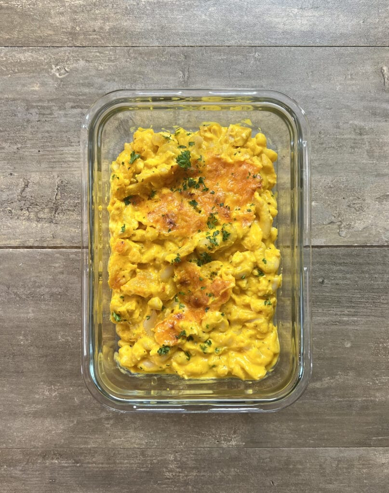

Hidden Vegtable Mac and Cheese
Back

DESCRIPTION
This Mac and Cheese is macro friendly with 50 grams of protein and is
full of nutrients from vegetables hidden in the cheese sauce. The
sauce is made up of carrots, cauliflower, milk, and cheese.
INGREDIENTS
- 2 lbs (908 g) boneless skinless chicken breast
- 12 oz (340 g) macaroni noodles gluten free if needed
- 1 lb (454 g) frozen cauliflower
- 3 medium (300 g) carrots
- 1 tbsp (15 g) oil
- 8 oz (227 g) cheddar cheese block is best
- 2 cups (480 g) pasta water
- 1½ cups (360 g) 2% milk
- salt and pepper to taste
- any other seasoning you like is optional
INSTRUCTIONS
FOR THE VEGETABLES
- Wash and cut your carrots into smaller pieces so that they roast quicker.
- On a lightly oiled sheet pan, place the carrots and frozen
cauliflower. Drizzle over 1 tbsp of oil and lightly season with
salt and pepper. Toss to coat.
- Roast at 425°F (218°C) for 20-25 minutes, flipping half way through.
FOR THE CHICKEN
- Trim the excess fat and skin from the chicken and either cut or
pound the chicken so that is even in thickness throughout. I shoot
for about ½" in thickness.
- Season both sides lightly with salt and pepper and place onto a
sheet pan. Place into the oven at 425°F for 15 minutes or until
the chicken reaches 165°F.
- Once the chicken has finished, allow it to rest for 10 minutes
before cutting it into a very small dice.
FOR THE MACARONI
- Cook the macaroni according to the packaging. Shoot for just past
al dente on the doneness. Reserve 2 cups of the pasta water for
your cheese sauce. Be sure not to use too much water in your pot.
Too much water will dilute the starchy pasta water that we will
use to thicken the sauce later.
- Once cooked, rinse and store in cold water to stop the cooking
process until you are ready to use later.
FOR THE CHEESE SAUCE
- NOTE: If you wanted to add a bit of mustard powder, paprika, or
another spice you could certainly do that. I like to personally
keep it to salt and pepper but you should make it how you like it.
Using a blend of different cheese can also add layers of flavor if
you don't mind buying a few blocks of cheese.
- Shred your block of cheese using a box grater or food processor.
- Once the vegetables have finished roasting, place them into a
blender with 2 cups of pasta water, 1½ cups of milk, and about ⅘
of all of the cheese you just shredded. Blend on high speed for
30-60s or until smooth.
FOR THE MAC & CHEESE
- In a 13"x9" baking dish, pour about half of the cheese sauce into the bottom.
- Drain the water away from your macaroni and dump the noodles into the pan.
- Add in the chopped chicken and pour the remaining cheese sauce over the top.
- Stir to evenly distribute the cheese sauce and give it a taste test.
Adjust with salt and pepper to taste. Mix again if necessary.
- Top the dish with the remaining shredded cheese and place back into
the oven at 425°F for 10 minutes to brown the cheese and thicken
the sauce. For the last two minutes, I like to turn the oven to
broil to help the cheese brown.
PLATING
- This recipe makes 6 servings. Cut the dish into 6 equal portions
and place into each meal prep container. Top with chopped parsley
for a garnish if you wish.